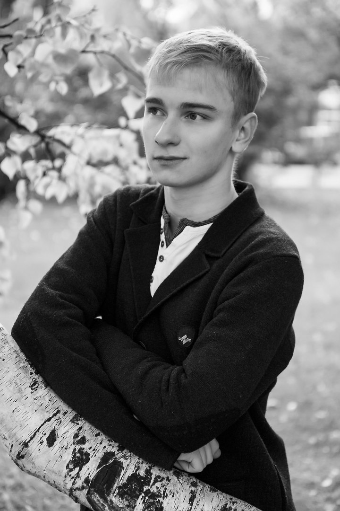

Баранов Никита Владимирович
 Всем добого времени суток читающим меня людям! Меня зовут, как понятно из заголовка, Баранов Никита, уроженец Благовещенска, находящимся в Амурской области, что в Дальнем Востоке.Родился я 21 июня 2000 года в семье строителя-инженера и учителя. Адская смесь, не так ли? Вот из этой "смеси" и породился я.
Родных братьев и сестер не имею, только двоюродные/троюродные, ну а также бабушки и дедушки от обоих родителей.
Любимый цвета - персиковый, красный, зеленый. С любимой музыкой будут проблемы - у меня есть несколько любимых относительно жанра музыки.
Например, среди классики мне больше всего доставляет седьмая симфония Шостаковича , a среди рок-музыки - Гражданская оборона
По политическим координатом я считаю себя умерненно правым, но ехидный тест так не думает.
Являюсь выпускником и золотым медалистом 28 школы города Благовещенска(obviously, huh) и пока студентом Дальневосточного Федерального университета(ДВФУ или FEFU)
Пожалуй, напишу пару тезизов о своимх интересах увлечениях:
- Где-то в возрасте 11-12 лет занимался бисероплетением(что?);
- Потом, бросив бисер я стал (ВНЕЗАПНО) заниматься самбо, но и это было недолгим увлеченим;
- В течение трех лет играл (и играю) на гитаре;
- Увлекаюсь программированием (obviously, huh x2), пишу программы и сайты, как, например, эту;
- Люблю историю, особенно про 20 век и про Вторую Мировую Войну в частности. Например, могу я вам с радостью рассказать и показать на презентации последние 5 сталинских ударов.
- Помимо истории я также могу и в искусство - могу показать, что у такого знаментого художника, как Иванова, были фетиш на голых мальчиков (он такие картины рисовал, а не то, что вы подумали).